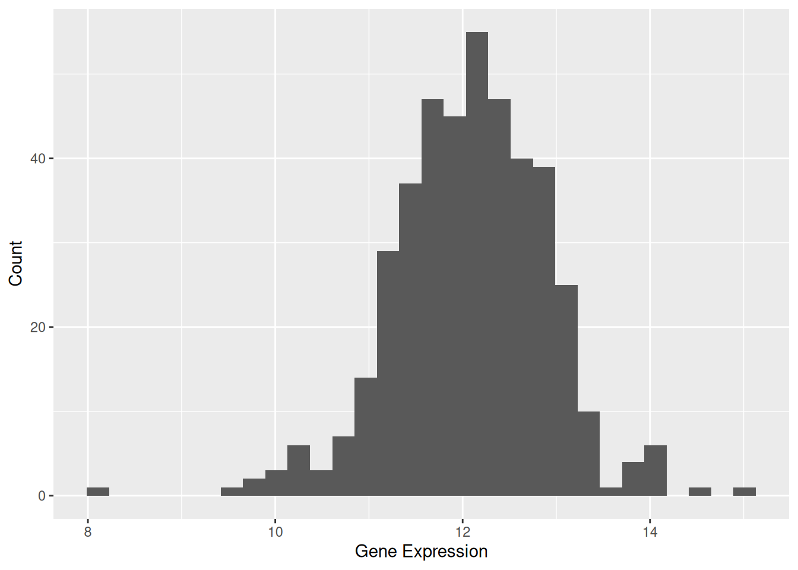
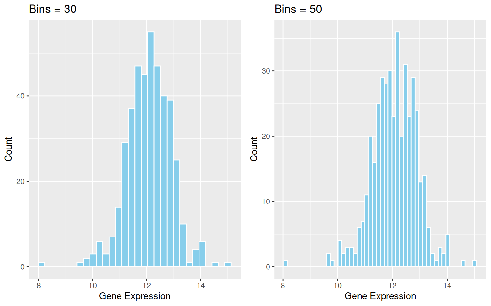
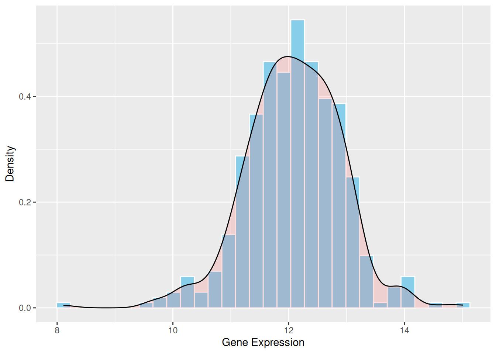
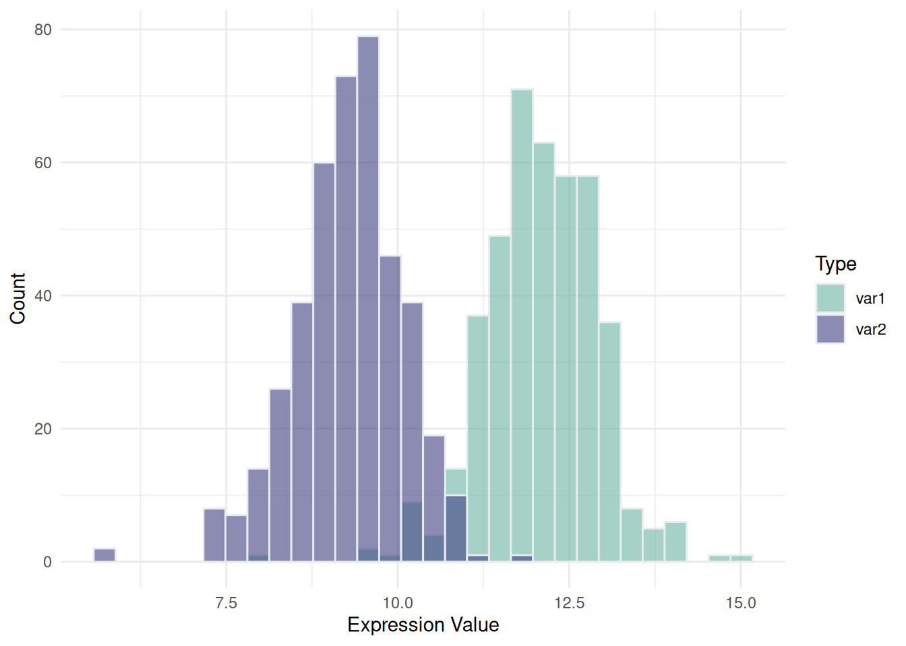
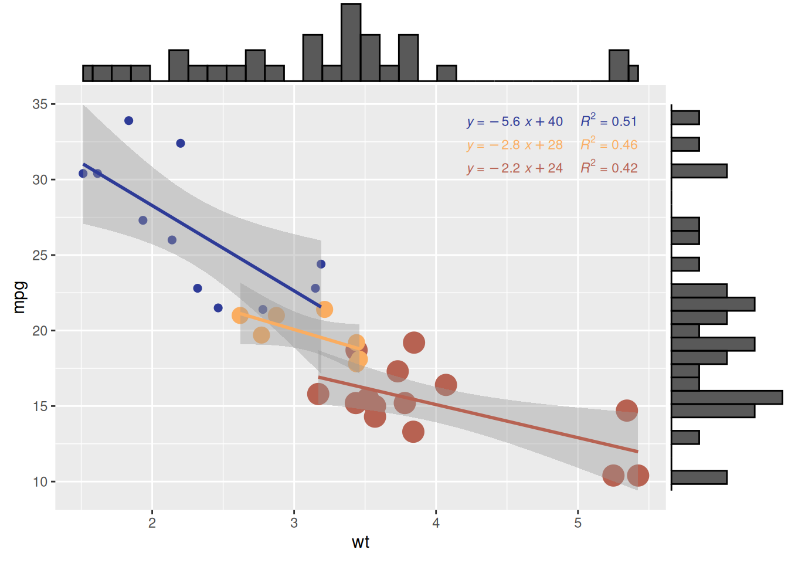
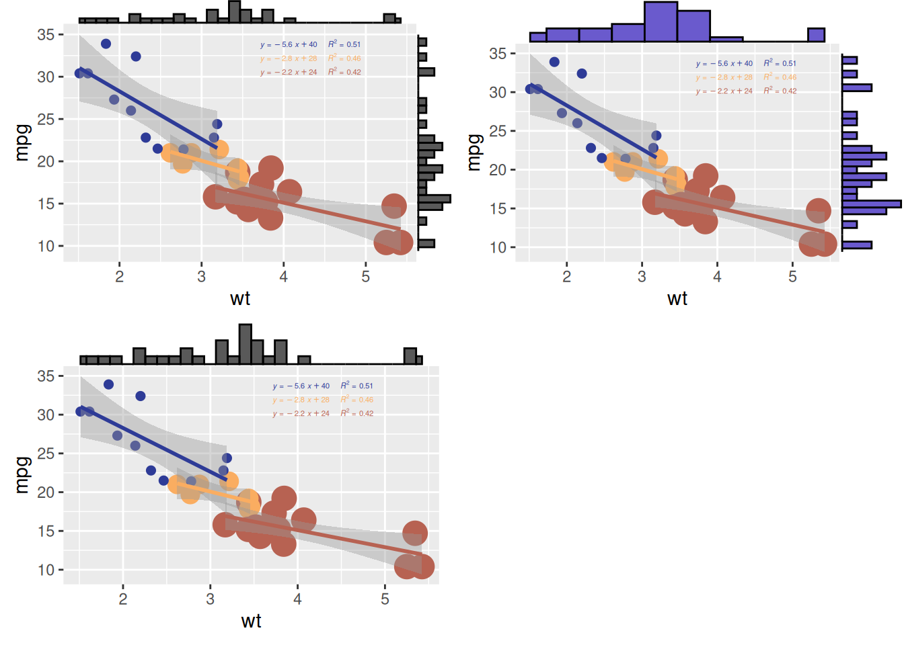

# Installing necessary packages
if (!requireNamespace("readr", quietly = TRUE)) {
install.packages("readr")
}
if (!requireNamespace("ggplot2", quietly = TRUE)) {
install.packages("ggplot2")
}
if (!requireNamespace("ggExtra", quietly = TRUE)) {
install.packages("ggExtra")
}
if (!requireNamespace("tidyverse", quietly = TRUE)) {
install.packages("tidyverse")
}
if (!requireNamespace("cowplot", quietly = TRUE)) {
install.packages("cowplot")
}
if (!requireNamespace("viridis", quietly = TRUE)) {
install.packages("viridis")
}
if (!requireNamespace("ggpmisc", quietly = TRUE)) {
install.packages("ggpmisc")
}
if (!requireNamespace("ggpubr", quietly = TRUE)) {
install.packages("ggpubr")
}
# Loading the libraries
library(readr) # Read tsv files
library(ggplot2) # Load ggplot2 for creating plots
library(ggExtra) # Load ggExtra for enhancing ggplot2 graphics
library(tidyverse) # Load tidyverse for data manipulation functions
library(cowplot) # Load cowplot for combining separate ggplots into the same graphic
library(viridis) # Load viridis for color maps
library(ggpmisc) # Load ggpmisc for extentions to ggplot2 with additional functions for statistical annotation
library(ggpubr) # Load ggpubr for extentions to ggplot2 with adding publication-ready themes, arranging multiple plots, and statistical testsHistogram
A histogram uses rectangular bars to represent the frequency of data within specific intervals, where the total area of the bars corresponds to the total frequency. It is primarily used to visualize the distribution of continuous variables.
Example

This basic histogram illustrates the expression levels of the TSPAN6 gene across different samples. The x-axis represents the data values, with each bar covering a specific range of values, while the y-axis shows how many data points fall within that range. In this histogram, the bars indicate the count of values within each specified range.
The histogram reveals that the data is centered around a value of 12, with values spanning roughly from 8 to 16. The shape of the histogram is approximately bell-shaped, suggesting that the data may follow a normal distribution.
Setup
System Requirements: Cross-platform (Linux/MacOS/Windows)
Programming Language: R
Dependencies:
readr,ggplot2,ggExtra,tidyverse,cowplot,viridis,ggpmisc,ggpubr
Data Preparation
We used the built-in R datasets (iris, mtcars) and the TCGA-LIHC.htseq_counts.tsv dataset from UCSC Xena DATASETS.
# Read the TSV data
data <- readr::read_tsv("https://bizard-1301043367.cos.ap-guangzhou.myqcloud.com/TCGA-LIHC.htseq_counts.tsv.gz")
# Filter and reshape data for the first gene TSPAN6 (Ensembl ID: ENSG00000000003.13)
data1 <- data %>%
filter(Ensembl_ID == "ENSG00000000003.13") %>%
pivot_longer(
cols = -Ensembl_ID,
names_to = "sample",
values_to = "expression"
) %>%
mutate(var = "var1") # Add a column to differentiate the variables
# Filter and reshape data for the second gene SCYL3 (Ensembl ID: ENSG00000000457.12)
data2 <- data %>%
filter(Ensembl_ID == "ENSG00000000457.12") %>%
pivot_longer(
cols = -Ensembl_ID,
names_to = "sample",
values_to = "expression"
) %>%
mutate(var = "var2") # Add a column to differentiate the variables
# Combine the two datasets
data12 <- bind_rows(data1, data2)
# View the final combined dataset
head(data12)# A tibble: 6 × 4
Ensembl_ID sample expression var
<chr> <chr> <dbl> <chr>
1 ENSG00000000003.13 TCGA-DD-A4NG-01A 12.8 var1
2 ENSG00000000003.13 TCGA-G3-AAV4-01A 9.72 var1
3 ENSG00000000003.13 TCGA-2Y-A9H1-01A 11.3 var1
4 ENSG00000000003.13 TCGA-CC-A3M9-01A 11.6 var1
5 ENSG00000000003.13 TCGA-K7-AAU7-01A 11.5 var1
6 ENSG00000000003.13 TCGA-BC-A10W-01A 12.0 var1 Visualization
1. Basic Histograms
Figure 1 illustrates the distribution of expression levels for the TSPAN6 gene across different samples.
# Basic Histogram
p1 <- ggplot(data1, aes(x = expression)) +
geom_histogram() +
labs(x = "Gene Expression", y = "Count")
p1

Tip
Key Parameters: binwidth / bins
The binwidth or bins parameter determines how much data each bin will contain. Modifying these values can significantly affect the appearance of the histogram and the information conveyed.
p2_1 <- ggplot(data1, aes(x = expression)) +
geom_histogram(bins = 30, fill = "skyblue", color = "white") +
ggtitle("Bins = 30") +
labs(x = "Gene Expression", y = "Count")
p2_2 <- ggplot(data1, aes(x = expression)) +
geom_histogram(bins = 50, fill = "skyblue", color = "white") +
ggtitle("Bins = 50") +
labs(x = "Gene Expression", y = "Count")
cowplot::plot_grid(p2_1, p2_2)

binwidth / bins
2. Histogram with Density Curve
The density curve provides a smooth representation of the data distribution. Unlike the histogram, which depends on the number of bins, the density curve uses kernel density estimation (KDE) to smooth the distribution. This allows a clearer understanding of the overall trend and shape of the data.
p1 <- ggplot(data1, aes(x = expression)) +
geom_histogram(aes(y = after_stat(density)), bins = 30, fill = "skyblue", color = "white") +
geom_density(alpha = 0.2, fill = "#FF6666") +
labs(x = "Gene Expression", y = "Density")
p1

3. Mirrored Histogram
A mirrored histogram provides an intuitive way to compare the distributions of two datasets. This visualization uses a mirrored structure, allowing you to quickly assess symmetry or differences between the datasets. By overlaying both histograms into a single plot, the mirrored histogram conserves visualization space while maintaining a clear representation of data distribution.
p <- ggplot(data12, aes(x = expression, fill = var)) +
geom_histogram(data = subset(data12, var == "var1"),
aes(y = after_stat(density)),
binwidth = 0.5,
alpha = 0.7,
fill = "#69b3a2") +
geom_histogram(data = subset(data12, var == "var2"),
aes(y = -after_stat(density)),
binwidth = 0.5,
alpha = 0.7,
fill = "#404080") +
scale_fill_manual(values = c("var1" = "#69b3a2", "var2" = "#404080")) +
labs(x = "Gene Expression", y = "Density")
p
4. Overlapping Histograms on the Same Axis
Overlaying or placing multiple histograms side by side on the same axis enables a direct comparison of distributions for two or more datasets within the same coordinate system. By adjusting colors and transparency, you can clearly visualize overlapping regions and distinguish between datasets. This technique is ideal for comparing 2–3 groups; more groups may lead to visual clutter, making the plot difficult to interpret.
p <- data12 %>%
ggplot(aes(x = expression, fill = var)) +
geom_histogram(color = "#e9ecef", alpha = 0.6, position = 'identity') +
scale_fill_manual(values = c("#69b3a2", "#404080")) +
labs(x = "Expression Value", y = "Count", fill = "Type") +
theme_minimal()
p

5. Faceted Histograms for Multiple Variables
Faceted histograms provide a structured way to compare and analyze data across multiple variables or categorical groups by displaying them in separate panels. Unlike traditional histograms, faceted layouts are particularly effective for avoiding overlap in visualizations, ensuring clarity in comparisons, and enabling multidimensional data exploration. This approach is ideal for grouped or classified data and enhances the interpretability of complex datasets.
# Use built-in iris dataset
data <- iris
# Reshape the data from wide to long format
data <- data %>%
gather(key = "variable", value = "value", -Species) # Exclude the Species column
# Plot the faceted histograms
p <- data %>%
ggplot(aes(x = value, color = Species, fill = Species)) +
geom_histogram(alpha = 0.6, binwidth = 0.3, position = "identity") +
scale_fill_viridis(discrete = TRUE, option = "D") +
scale_color_viridis(discrete = TRUE, option = "D") +
theme(
legend.position = "bottom",
panel.spacing = unit(0.5, "lines"),
strip.text.x = element_text(size = 10)
) +
xlab("Value") +
ylab("Frequency") +
facet_grid(Species ~ variable, scales = "free_x") # Create a facet grid
p
6. Adding Marginal Distributions Using ggMarginal()
# Create a scatterplot with marginal histograms
p <- ggplot(mtcars, aes(x = wt, y = mpg, color = factor(cyl), size = factor(cyl))) +
geom_point(aes(color = factor(cyl)), show.legend = TRUE) + # Scatter points with color mapped to cylinder
geom_smooth(method = 'lm', formula = y ~ x, se = TRUE, linewidth = 1, aes(color = factor(cyl))) + # Regression lines
scale_color_manual(values = c("#2e3b97", "#faad61", "#b76252")) + # Custom colors for regression lines
stat_regline_equation(
aes(label = paste(after_stat(eq.label), after_stat(rr.label), sep = "~~~~")),
formula = y ~ x, size = 3,
position = position_nudge(x = 2.7, y = 1)
) + # Add regression equations and R² values
theme(legend.position = "none") # Hide legend for cleaner visualization
# Add marginal histograms to the scatterplot
p1 <- ggMarginal(p, type = "histogram")
# Display the plot
p1

ggMarginal()
Tip
Customizable Parameters for Plots with Marginal Distributions
- Change the size of the marginal plot using the
sizeparameter. - Customize the appearance of the marginal plot with common parameters.
- Display only one marginal plot (either the x or y axis) using
margins = 'x'ormargins = 'y'.
# Create a scatterplot with marginal histograms
p <- ggplot(mtcars, aes(x = wt, y = mpg, color = factor(cyl), size = factor(cyl))) +
geom_point(aes(color = factor(cyl)), show.legend = TRUE) + # Scatter points with color mapped to cylinder
geom_smooth(method = 'lm', formula = y ~ x, se = TRUE, linewidth = 1, aes(color = factor(cyl))) + # Regression lines
scale_color_manual(values = c("#2e3b97", "#faad61", "#b76252")) + # Custom colors for regression lines
stat_regline_equation(
aes(label = paste(after_stat(eq.label), after_stat(rr.label), sep = "~~~~")),
formula = y ~ x, size = 1.5,
position = position_nudge(x = 2.2, y = 1)
) + # Add regression equations and R² values
theme(legend.position = "none") # Hide legend for cleaner visualization
# Change the size of the marginal plot
p1 <- ggMarginal(p, type = "histogram", size = 10)
# Customize the appearance of the marginal plot
p2 <- ggMarginal(p, type = "histogram", fill = "slateblue", xparams = list(bins = 10))
# Display only one marginal plot (x-axis marginal plot)
p3 <- ggMarginal(p, type = "histogram", margins = 'x')
cowplot::plot_grid(p1, p2, p3)

Applications
1. Applications of Basic Histogram

Figure 9 shows the differences between the relative frequencies of human X and human Y chromosome’s histograms for n = 6. [1]
2. Applications of Faceted Histograms


Fig. 10a shows the imaging features and whole-lesion histogram analysis of typical SPLs. [2]
Fig. 10b demonstrates examples of cranial MRI from patients with WHO grade I (upper row) and WHO grade II astrocytoma (lower row) including the corresponding whole tumor ADC histogram, H&E staining and Ki-67 immunohistochemistry. [3]
Reference
- Costa, A. M., Machado, J. T., & Quelhas, M. D. (2011). Histogram-based DNA analysis for the visualization of chromosome, genome, and species information. Bioinformatics, 27(9), 1207–1214. https://doi.org/10.1093/bioinformatics/btr131
- Xiang, L., Yang, H., Qin, Y., Wen, Y., Liu, X., & Zeng, W.-B. (2023). Differential value of diffusion kurtosis imaging and intravoxel incoherent motion in benign and malignant solitary pulmonary lesions. Frontiers in Oncology, 12, Article 1075072. https://doi.org/10.3389/fonc.2022.1075072
- Gihr, G. A., Horvath-Rizea, D., Hekeler, E., Ganslandt, O., Henkes, H., Hoffmann, K.-T., Scherlach, C., & Schob, S. (2020). Histogram analysis of diffusion weighted imaging in low-grade gliomas: in vivo characterization of tumor architecture and corresponding neuropathology. Frontiers in Oncology, 10, 206. https://doi.org/10.3389/fonc.2020.00206
- Wickham, H., Hester J, & Bryan J. (2024). readr: Read Rectangular Text Data. https://CRAN.R-project.org/package=readr
- Wickham, H. (2016). ggplot2: Elegant graphics for data analysis. Springer. https://ggplot2.tidyverse.org
- Gao, Y. (2021). ggExtra: Add marginal plots to ggplot2. https://cran.r-project.org/package=ggExtra
- Wickham, H., & RStudio Team. (2019). tidyverse: Easily install and load the ‘tidyverse’. https://cran.r-project.org/package=tidyverse
- Claus O. Wilke. (2024). cowplot: Streamlined Plot Theme and Plot Annotations for ‘ggplot2’. https://CRAN.R-project.org/package=cowplot
- García, M. (2018). viridis: Default color maps from ‘matplotlib’. https://cran.r-project.org/package=viridis
- Aubry, R., & Bouchard, C. (2020). ggpmisc: Miscellaneous extensions to ‘ggplot2’. https://cran.r-project.org/package=ggpmisc
- Kassambara, A. (2021). ggpubr: ‘ggplot2’ based publication-ready plots. https://cran.r-project.org/package=ggpubr